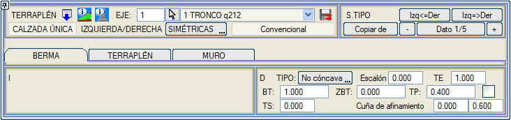
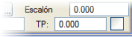
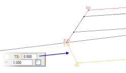

Burada
bahsedilen banket, üstyapı paketi içinde tanımlanan ve taşıt yolu ile banketlerden sonra, üstyapıyı sonlandıran şevden önce uygulanan bankettir.

Aşağıdaki parametrelerle
tanımlanır:
- Genişlik
(BT) ve banket kot farkı (ZBT): Örneğin, 0.5
m genişliğinde ve %8 eğimli bir banket, BT=0.5 ve ZBT=0.04 olarak tanımlanacaktır.
Aç-kapa tünellerde, BT ve ZBT parametreleri kullanılarak bir dolgu şevi tanımlanmasına izin verilir. Eğer aç-kapa tünelin temeli boşluktaysa, bu şev uygulanır ve ortaya çıkan dolgu hacmi ölçülür.
- TİP:
Eğer banketin eğimi bitişiğindeki platformun eğiminden daha küçükse, banketin başlangıcında bir içbükeylik oluşur. Burada, bu içbükeyliğe izin verilip verilmeyeceği veya bu durumda banketin son yardımcı platformun uzantısı olarak yerleştirilmeye zorlanıp zorlanmayacağı kontrol edilir.

|
Yukarıdakilere dayanarak, kırmızı kotun uzantısında bir banket isteniyorsa, ZBT'de negatif bir değer (örneğin, -1) ve içbükey olmayan bir tip belirtmek yeterlidir. |
- Üstyapı paketi bitiş şevi (TP), dolgu şevinin tesviye yüzeyinden başladığı durumlar için (YARMADA, hendeğin tesviye yüzeyinden başladığı belirtilmiştir). Hendek banketten başladığında, üstyapıyı sonlandıran hendektir, ve eğer yeterince derin değilse, tabanından tesviye yüzeyine kadar dikey bir kesitle bitirilir. Tüm şevler gibi, yatay/düşey oranına göre tanımlanır.
Kaplama
bitiş şevi TP için negatif değerler kullanılabilir. Bu durumda,
tesviye yüzeyi, platformun son noktasını (banket kenarı veya
kaplamalı banket kenarı) bulmak için belirtilen şevle yükselir.
 Yarma hendeği banketten ve dolayısıyla dolgu şevi de buradan başladığında, üstyapı paketindeki bitiş şevini TP değerine zorlamak isteniyorsa, yanındaki kutucuğun da etkinleştirilmesi gerekir.
- Basamak:
Banketin, ana platformun veya banketin aşınma tabakası seviyesine kadar üstyapı veya dolgu katmanı taşımaması nedeniyle oluşan kot farkı. Genellikle drenajlı aşınma tabakaları ile birlikte kullanılır.
- TE: basamak için bir şev tanımlar.
- TS veya Tesviye yüzeyi bitiş şevi:
Bu kutucuk, kontrol noktasının banket kenarında veya kaplamalı banket kenarında tanımlandığı ve arazinin platformu kırmızı kot ile tesviye yüzeyi arasında kestiği durumlarda üstyapı paketinin bitiş şevini tanımlamayı sağlar. Bu, tesviye yüzeyinden dolgu topuğuna kadar inen şevdir.
- İnceltme Kaması: İki parametre ile tanımlanır:
- Tesviye yüzeyi drenaj noktasından dolgu şev kenarına (omuz) kadar olan banket genişliği. Banket kenarından, bu banketin eğimiyle, teorik dolgu topuğunu bulmak için inilir; ancak dolgu yüksekliği daha düşükse, bu durumda iptal yüksekliği uygulanır.
- İptal yüksekliği: Eğer dolgu daha alçaksa, teorik şeve paralel bir şev yerleştirilir. Değilse, teorik dolgu topuğunda bitirilir.
|